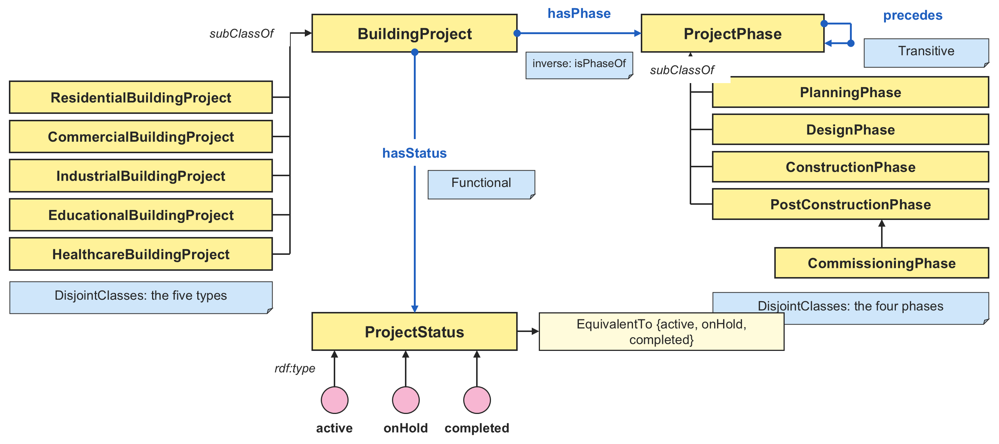
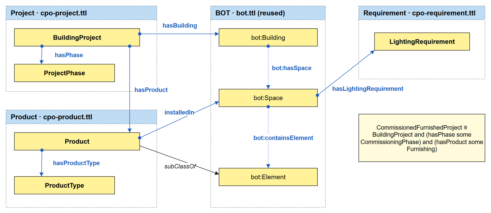
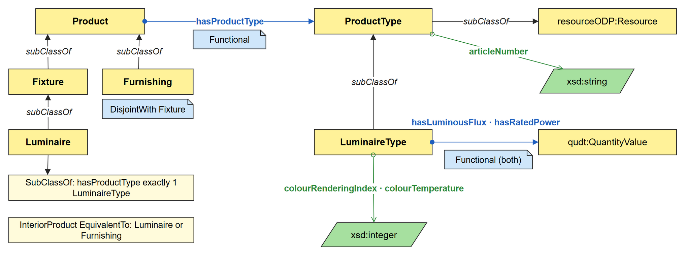
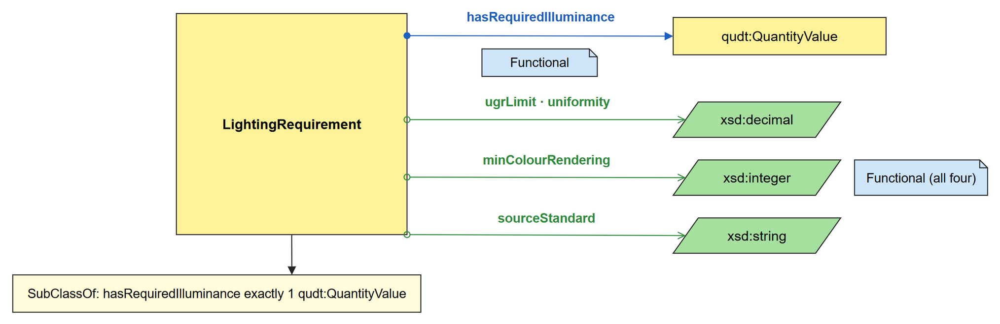

Lecture 4a · module
Project
Building projects, their types, phases and status.
- 15 classes
- 5 object properties
- 3 data properties
- 3 individuals
https://w3id.org/cpo/project
Diagrams: 1 classes · 2 data and definitions
TADS23 Advanced Building Information Delivery · Jönköping University
Building projects, their phases, the products installed in their buildings, and the requirements on their spaces. Worked example of TADS23, HT2026.
https://w3id.org/cpo#
The composed ontology imports the three modules and the Building Topology Ontology (BOT), aligns CPO with BOT, and holds the spanning axioms that connect the modules.
Lecture 4c · composed ontology
https://w3id.org/cpo
Its documentation covers every term of CPO, so each cpo: term links to its own entry.

Each module is a small ontology of its own, with its own IRI and file. All terms share the namespace https://w3id.org/cpo#.

Lecture 4a · module
Building projects, their types, phases and status.
https://w3id.org/cpo/project
Diagrams: 1 classes · 2 data and definitions


The individuals of the worked example live apart from the ontology, in their own namespace https://w3id.org/cpo/data/, as in Lecture 3 (option C).
Worked example · data
One school building project with its building, storey and spaces; the EN 12464-1:2021 lighting requirement for classrooms; three luminaire types from the Fagerhult catalogue; and the luminaires installed in each space. It imports the composed ontology, so a reasoner sees the data and the ontology together.
https://w3id.org/cpo/data
Every IRI resolves: a browser gets the documentation, and RDF tools get RDF/XML, JSON-LD, N-Triples or Turtle.
https://w3id.org/cpoPREFIX cpo: <https://w3id.org/cpo#>
SELECT ?luminaire ?space
WHERE {
?luminaire a cpo:Luminaire ;
cpo:installedIn ?space .
}
curl -L -H "Accept: text/turtle" \ https://w3id.org/cpo/product
Ask for application/rdf+xml, application/ld+json or application/n-triples for the other formats.
CPO is the worked example of TADS23 Advanced Building Information Delivery at Jönköping University. Students build it step by step with ABID-Mo, the course's modular ontology modeling method.
Building projects, their types, phases and status.
Installed products and their types from a manufacturer catalogue.
The requirement module, and the composed ontology that imports the modules, aligns them with BOT and connects them with spanning axioms.
Compare your own ontology with these files, and reuse CPO in your project. CPO is kept small on purpose, so that each modeling decision can be explained in class: it is an example for learning, not a complete ontology for practice.